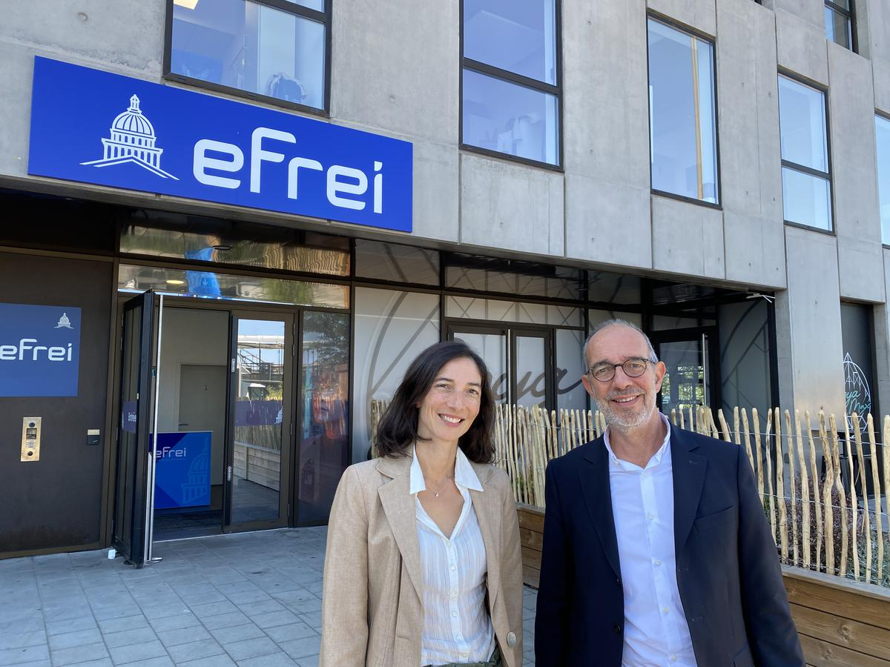

1 / 3

EFREI Campus
2 / 3
Vie étudiante
3 / 3

Projets étudiants
L'EFREI est une grande école d'ingénieurs spécialisée dans le numérique et les technologies de l'information. Elle forme des experts en informatique, cybersécurité, intelligence artificielle et développement logiciel.
Le département d’informatique de EFREI Paris forme des ingénieurs capables de concevoir, développer et piloter des solutions numériques innovantes. Il s’appuie sur une pédagogie orientée projets, en lien étroit avec les besoins des entreprises et les évolutions technologiques.